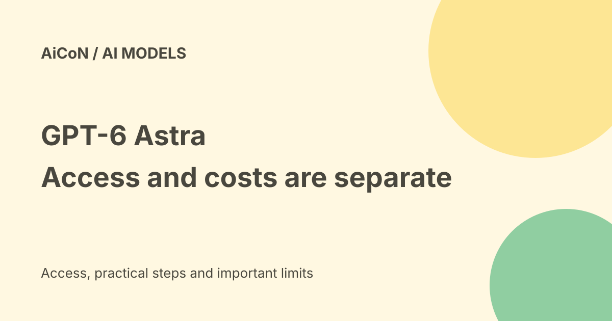

GPT-6 Astra: Pro access, API prices and long-context costs
GPT-6 Astra is OpenAI's original high-capability model for complex work. In ChatGPT it powers GPT-6 Pro on eligible plans; Plus access is through Work and Codex. It is different from the withdrawn GPT-6.1 Astra release, and its API has separate usage-based charges.

What can it do?
The official model page describes complex reasoning, coding, computer use, research and document creation. It lists a 1,050,000-token context window and 128,000 maximum output tokens. Tokens are pieces of text, and a context limit is not a guarantee that every detail will be used correctly.
The page supports text input/output and image input, but not direct audio or video. Using external tools requires the surrounding application's supported interfaces and controls. A model can produce a convincing but wrong answer or an unsafe action proposal.
ChatGPT access
Current OpenAI help says GPT-6 Pro, powered by Astra, is available in ChatGPT for Pro $100, Pro $200, Business and Enterprise plans. Plus includes Astra in ChatGPT Work and Codex, not an identical Pro entitlement in ordinary Chat.
Enterprise access depends on workspace model permissions. The checked sources do not establish a particular user's quota, Indian checkout price or enabled workspace. The launch's broad rollout wording should not replace the more specific current help page.
That help page says Astra requires Codex CLI 0.153.0 or newer and recommends the latest ChatGPT Desktop app. Updating can fix a version issue; it cannot create an entitlement that your plan does not include.
Standard API rates
| Per million text tokens | USD |
|---|---|
| Input | $10 |
| Cached input | $1 |
| Cache writes | $12.50 |
| Output | $50 |
Cache reads and writes are different operations. Tool calls may have extra fees. These are list rates, not a fixed job price, an INR quote or a tax-inclusive checkout.
For a base-rate example spread across short requests, one million uncached input tokens plus 100,000 output tokens costs $15 before tools, retries or other charges. A single request with a million input tokens is a different case because of the long-context surcharge.
Long context and processing modes
The model page says prompts above 272,000 input tokens cost twice the input and cache rates and 1.5 times the output rate for the full request. That means $20 input, $2 cached input, $25 cache writes and $75 output per million in that case. The higher rate is not confined to tokens above the threshold.
Batch and Flex are priced at 50% of Standard, while Fast is twice the applicable rates. Check eligibility, latency and tools for the actual mode. A lower base price does not mean every workflow is cheaper after failures or retries.
A careful evaluation
- Record the exact model name and chosen API mode.
- Choose a small task with a clear success condition and permitted data.
- Keep external sends, purchases and account changes disabled for the first test.
- Review the reasoning result, source evidence or code tests.
- Measure billed input, output, caching and tool calls, including retries.
- Set budget controls before scaling.
We did not run a billed request or inspect a subscriber account. OpenAI's capability and benchmark statements are vendor claims, not independent performance results from AiCoN.
Original Astra versus 6.1 Astra
The existing AiCoN safety-report guide covers the decision not to release GPT-6.1 Astra. That story does not mean the original GPT-6 Astra API was withdrawn. Similarly, GPT-6.1 Sol is a different model. Never shorten those names to a shared version number when discussing access.
Safety evaluations and long context do not remove the need to inspect work. Review consequential messages, code deployment, regulated advice and tool actions before they affect people or money.
India and private data
Global access pages do not confirm your region, billing, data residency or workplace permission. Use the current account terms and organisation rules before sending customer, health or internal documents.
Frequently asked questions
Is Astra free?
The checked routes are paid subscriptions or billed API access, not a verified free account allowance.
Does Plus include the same Chat Pro access?
Current help names Work and Codex for Plus Astra access.
Is this the withdrawn 6.1 Astra?
No.
What changed since the earlier post?
This guide adds current plan-specific help, exact API rates, cache writes, full-request long-context charges and the distinction from the later withdrawn release.
Sources: Exact model page · Official launch · Current plan and version help. Checked 8 October 2026.